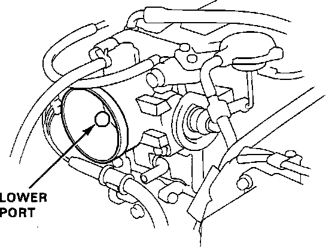

Auxiliary Air Valve (Idle Speed): Testing and Inspection
NOTE: The Fast Idle Valve is factory adjusted, it should not be disassembled.1. Remove the air intake tube from the throttle body.
2. Start the engine and allow it to idle.
Lower Port Location:

3. Put your finger over the lower port in the throttle body and make sure that there is air flow with the engine cold, coolant temperature must be below:
86 degrees F (30 degrees C)
a. If there is air flow, go to step 4.
b. If there is NO air flow, replace the Fast Idle Valve and retest.
4. Warm up the engine, (cooling fan comes ON).
5. Check that there is NO air flow at the lower port and no change in idle speed when covering the lower port.
a. If the idle speed is lower with the lower port covered, replace the Fast Idle Valve and retest. Refer to "COMPONENT REPLACEMENT AND REPAIR PROCEDURES".
b. If the idle speed remains the same, the Fast Idle Valve is GOOD.